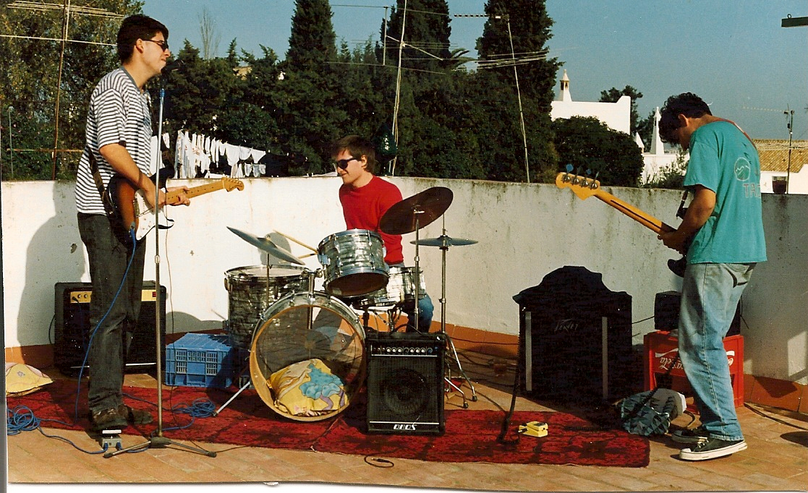
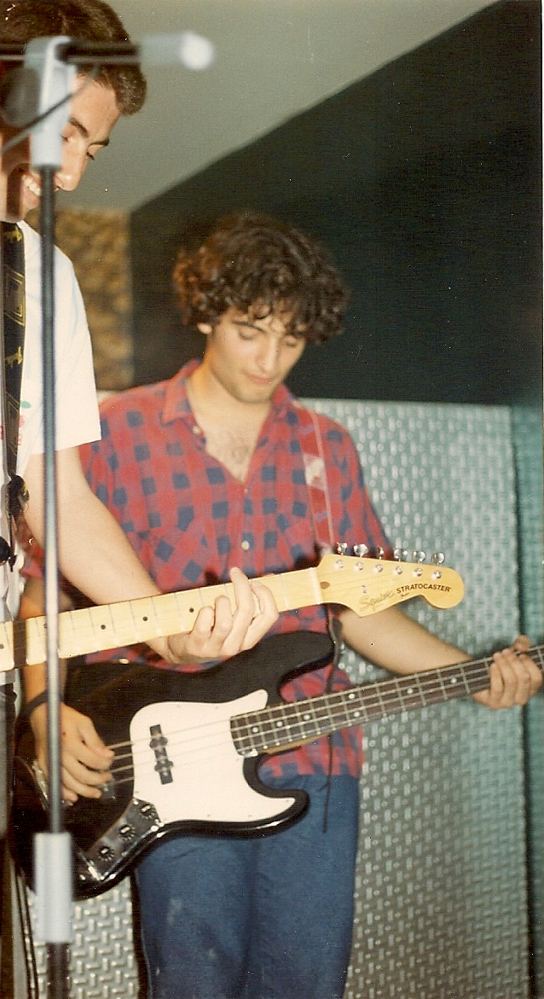
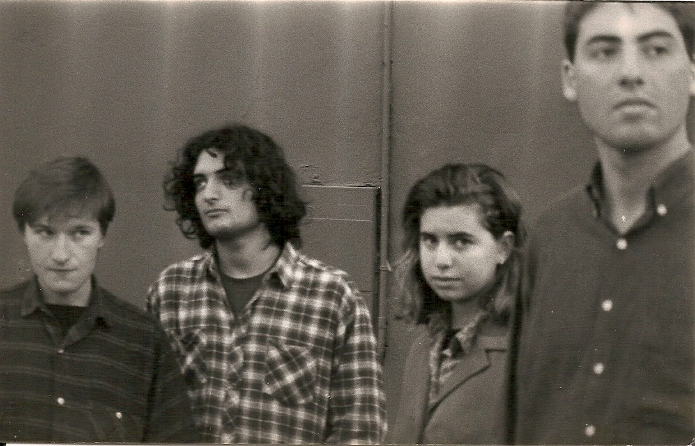
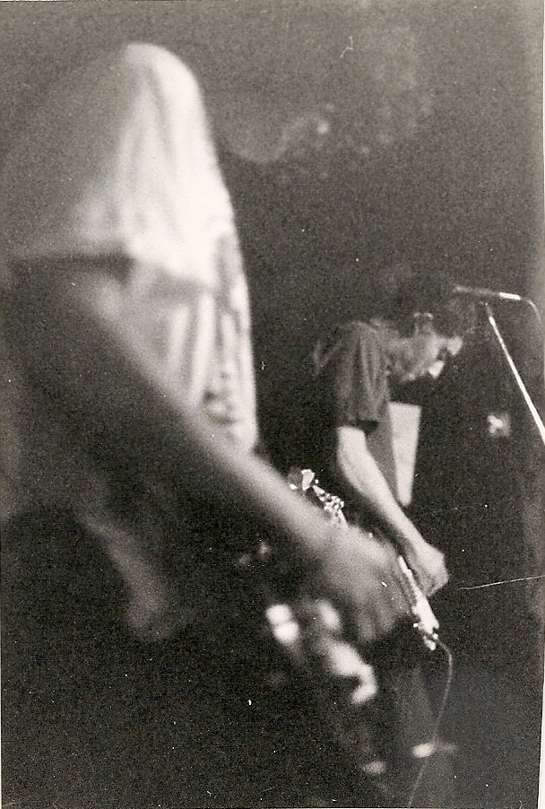
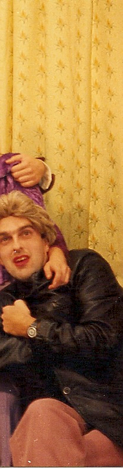
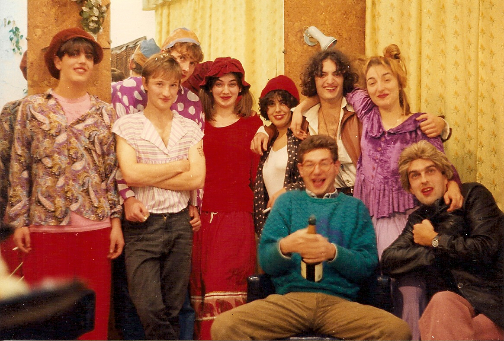
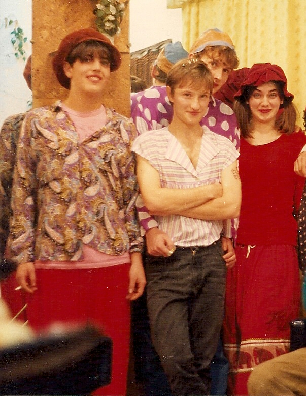
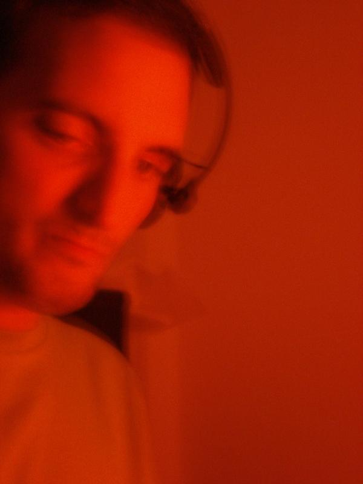

My beginnings in the world of music began in 1990 when a few friends got together to form a group that later something called Sr. Chinarro.
I was part of the group as bassist until late 1994, when I separated to form Lupa with Juan Fco. Morato. After a demo recorded with a means paupers, direct some unforgettable, and even be finalists Villa de Bilbao, the group disbanded.
Later, between 1997 and 2000, I returned to work with Sr. Chinarro, this time as a keyboardist in Festival Internacional de Benicàssim (two times), Santander, Granada and others.
Sr. Chinarro - Primera maqueta (1991)
Sr. Chinarro - Segunda maqueta (1991)
Sr. Chinarro - El Colectivo Karma (El Colectivo Karma, 1992)
Sr. Chinarro - Pequeño Circo EP (Acuarela Records, 1993)
Pequeñas Cosas Furiosas - Cubierta de melaza (1995)
Lupa - Primera maqueta (1996)







From 1992 collaborated with film director Juan Jose Moreno, participating in one way or another in his early films. In those years we recorded La mano en el congelador (1992) y Materia gris (1993).
In 1995 I made the soundtrack of the film Entiendes...? and a few years later in the movie Las primeras veces (Juan J. Moreno, 2001).

From the beginning of the new century my interest in the electronic music are in-crescendo.
In 2005 start DJing and in 2008 produce my first tracks of electronic music.
Currently I combine it with the production of original soundtracks free rights to videos, short films, websites, video games, etc.
Example of work done.